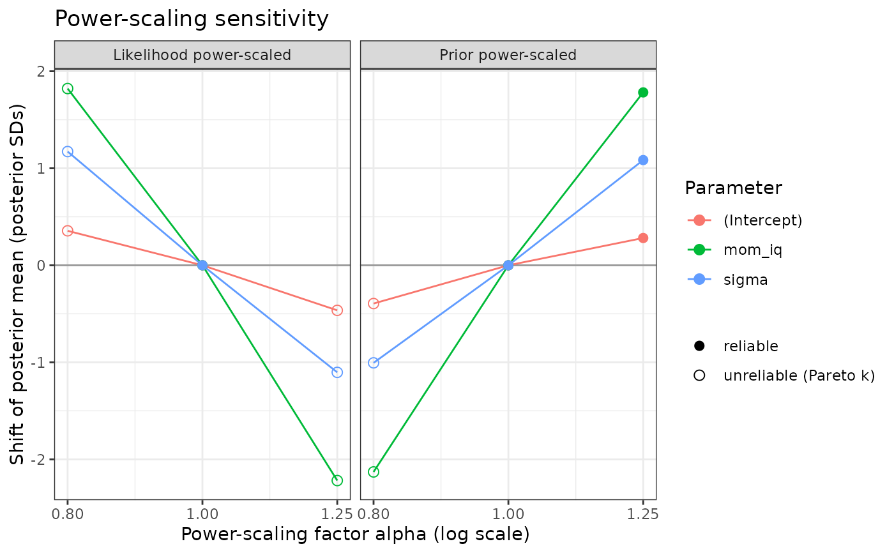

Prior and likelihood sensitivity by power-scaling
Source:R/model_sensitivity.R
prior_sensitivity.RdDiagnoses how strongly the posterior depends on the prior, and whether
prior and data conflict, without refitting the model. The prior (or the
likelihood) is "power-scaled", i.e. raised to a power alpha, and the
resulting change in the posterior is measured (Kallioinen et al., 2023).
Usage
prior_sensitivity(
fit,
alpha = c(0.8, 1.25),
threshold = 0.05,
z_threshold = 2,
pars = NULL,
scale_priors = NULL
)Arguments
- fit
A
stanregobject fromrstanarm::stan_glm()orfit_model_with_prior().- alpha
Power-scaling factors for the finite perturbations. Values below 1 weaken, above 1 strengthen the prior (or likelihood). The default,
c(0.8, 1.25), is a symmetric change on the log scale.- threshold
Influence threshold used for the diagnosis. The default 0.05 corresponds to a prior (or likelihood) contributing about 10% of the posterior precision in a normal model.
- z_threshold
Absolute
conflict_zat or above which an influential prior is diagnosed as conflicting with the data.- pars
Parameters to report (default: all).
- scale_priors
Parameters whose priors are power-scaled (default: all). Use this to isolate one prior, e.g.
scale_priors = "sigma".
Value
An object of class bmb_prior_sensitivity with elements
summary (one row per parameter), perturbation (one row per
component, alpha and parameter, with Pareto \(\hat{k}\)), priors
(the priors used, after autoscaling), and settings. Has print() and
plot() methods.
Details
Local sensitivity. The derivative of a posterior expectation with
respect to log(alpha) at alpha = 1 equals a posterior covariance
(Giordano et al., 2018). For each parameter \(\theta\) with posterior
mean \(\mu\) and standard deviation \(\sigma\), bmbeR reports
prior_mean_sens= \(Cov(\theta, \log p(\theta)) / \sigma\): how many posterior SDs the mean moves per unit change inlog(alpha);prior_sd_sens= \(Cov((\theta-\mu)^2, \log p(\theta)) / (2\sigma^2)\): the relative change in the posterior SD;lik_mean_sens,lik_sd_sens: the same with the log-likelihood.
In a conjugate normal model with prior \(N(m_0, s_0^2)\) and likelihood
\(N(\bar y, s^2)\), -2 * prior_sd_sens is the share of posterior
precision contributed by the prior, -2 * lik_sd_sens the share
contributed by the data, and
conflict_z = prior_mean_sens / (2 * sqrt(prior_sd_sens * lik_sd_sens))
equals \((m_0 - \bar y)/\sqrt{s_0^2 + s^2}\), the classic prior
predictive check of prior-data conflict (Box, 1980). Outside that model
these are approximations. See the "Prior sensitivity" article on the
package website for the derivations.
Diagnosis (per parameter). The prior's influence is
max(|prior_mean_sens|, |prior_sd_sens|): a prior matters if it moves the
posterior mean or adds precision. The likelihood's informativeness is
|lik_sd_sens|. (lik_mean_sens is reported but not used: for a
symmetric posterior, tempering prior and likelihood together leaves the
mean unchanged, so lik_mean_sens = -prior_mean_sens.)
"-": the prior's influence is belowthreshold; the likelihood dominates."weak likelihood": the prior is influential and the likelihood is not informative; the data say little about this parameter."prior-data conflict": prior influential, likelihood informative, and|conflict_z| >= z_threshold; prior and data disagree."informative prior": prior influential and likelihood informative, but they agree; fine if the prior is justified.
This refines the diagnosis of Kallioinen et al. (2023), which flags potential conflict whenever both prior and likelihood sensitivity are high, by separating informative-but-compatible priors from conflicting ones.
Finite perturbations. For each value in alpha, the posterior under
the power-scaled prior (and likelihood) is approximated by Pareto-smoothed
importance sampling (Vehtari et al., 2024). The Pareto \(\hat{k}\)
diagnostic indicates whether the approximation is reliable. Weakening
(alpha < 1) is the harder direction: for an approximately normal
posterior the importance weights have a Pareto tail with \(k \approx
1 - \alpha\) or heavier, so values much below 0.8 are often unreliable.
Use sensitivity_analysis() to assess large perturbations by refitting.
Posterior contraction is \(1 - \sigma^2_{post}/\sigma^2_{prior}\)
(Schad et al., 2021): values near 0 mean the data barely updated the
prior. It is NA when the prior variance is infinite (flat, Cauchy,
Student-t with df <= 2).
The intercept is analysed at the predictor means, which is the parameter
rstanarm places its prior on. Supported: models from
rstanarm::stan_glm() with normal, Student-t, Cauchy, Laplace, flat or
exponential priors, fitted without QR = TRUE.
References
Kallioinen, N., Paananen, T., Bürkner, P.-C., & Vehtari, A. (2023). Detecting and diagnosing prior and likelihood sensitivity with power-scaling. Statistics and Computing, 34, 57. doi:10.1007/s11222-023-10366-5
Giordano, R., Broderick, T., & Jordan, M. I. (2018). Covariances, robustness, and variational Bayes. Journal of Machine Learning Research, 19(51), 1–49.
Vehtari, A., Simpson, D., Gelman, A., Yao, Y., & Gabry, J. (2024). Pareto smoothed importance sampling. Journal of Machine Learning Research, 25(72), 1–58.
Box, G. E. P. (1980). Sampling and Bayes' inference in scientific modelling and robustness. JRSS A, 143(4), 383–430. doi:10.2307/2982063
Schad, D. J., Betancourt, M., & Vasishth, S. (2021). Toward a principled Bayesian workflow in cognitive science. Psychological Methods, 26(1), 103–126. doi:10.1037/met0000275
Examples
# \donttest{
data(kidiq, package = "rstanarm")
fit <- rstanarm::stan_glm(kid_score ~ mom_iq, data = kidiq,
prior = rstanarm::normal(2, 0.05),
chains = 2, iter = 1000, refresh = 0)
ps <- prior_sensitivity(fit)
ps
#> <bmb_prior_sensitivity> power-scaling diagnostics (1000 draws, threshold 0.05)
#> variable mean sd contraction prior_mean_sens prior_sd_sens
#> (Intercept) 86.806 1.099 1.000 0.559 0.218
#> mom_iq 1.567 0.046 0.142 7.998 -0.434
#> sigma 23.255 0.897 0.998 3.705 0.304
#> lik_mean_sens lik_sd_sens conflict_z diagnosis
#> -0.601 -0.771 0.681 informative prior
#> -8.024 -0.180 14.329 prior-data conflict
#> -3.859 -0.841 3.665 prior-data conflict
#>
#> Flagged parameters:
#> (Intercept) informative prior
#> mom_iq prior-data conflict
#> sigma prior-data conflict
#>
#> Finite perturbations: posterior mean shift, in posterior SDs, when the prior or
#> likelihood is raised to the power alpha (* = unreliable importance sampling;
#> refit with sensitivity_analysis() instead):
#> prior a=0.8 prior a=1.25 lik a=0.8 lik a=1.25
#> (Intercept) -0.39* +0.28 +0.36* -0.46*
#> mom_iq -2.13* +1.78 +1.82* -2.22*
#> sigma -1.01* +1.08 +1.17* -1.10*
#> Intercept diagnostics refer to the intercept at the predictor means.
plot(ps)

# }